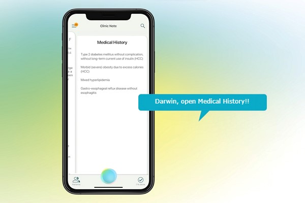

Edvak’s e-prescribing solution a comprehensive, easy-to-use solution for electronic prescribing, designed to ensure you and your patients are covered every step of the way. Whether you are looking for low-cost e-prescribing to save you time and free you from your script pad forever, or advanced e-prescribing with all the latest features that keeps you up to date with regulatory mandates.
E-prescribing is intended to replace writing out, faxing, or calling in prescriptions and the most significant advance is the improvement to the safety and quality of patient care. Avoidable errors associated with handwritten prescriptions can include selection of an incorrect or unavailable drug or dosage, duplication of therapy, omission of information, and misinterpretation of the order due to illegible handwriting.
E-prescribing gives health care providers full visibility into all of a patient’s documented allergies and previously prescribed drugs and will trigger clinical alerts if a newly prescribed drug has any potential for negative reactions.
Electronic prescribing is significantly more secure than paper prescriptions. Paper prescriptions are subject to transcription errors and are targets for theft and tampering, making it relatively easy for drug-seeking patients to alter prescriptions by increasing dosage, quantity prescribed, or number of refills of medications.
Edvak’s e-prescribing solution a comprehensive, easy-to-use solution for electronic prescribing, designed to ensure you and your patients are covered every step of the way. Whether you are looking for low-cost e-prescribing to save you time and free you from your script pad forever, or advanced e-prescribing with all the latest features that keeps you up to date with regulatory mandates.
The issue is that traditional dictation necessitates transcription, which is very expensive, delays important updates to medical records, and, more importantly, carries a high risk of errors that, at best, make it more difficult to proofread and correct or, at worst, go unnoticed and lead to other problems.
A risk of compliance, inconsistent and erroneous reports, ineffective workflows, and increased expenses can all have an impact on the final result. With Edvak’s comprehensive speech automated solutions, you may overcome any paperwork difficulties and convert disjointed, manual procedures into a streamlined, automated workflow. Our Darwin, a speech bot with AI capabilities can handle most daily duties and lessen the stress that doctors experience when charting or working.
The creation of medical notes in software applications poses an intrinsic problem in workflow as the technology inherently intervenes in the processes of collecting and assembling information, as well as the production of a data-driven note that meets both individual and healthcare system requirements
It is no secret that laboratories are currently facing increasing hurdles in a healthcare setting that is becoming more digital, from regulatory changes and lower reimbursements to time and resource limits. Laboratories require innovative strategies and solutions to flourish as we move toward data-driven, patient-centric care, which will enhance workflows and enable them to continue operating profitably.
Physical medical records, handwritten requests, paper orders, results transmitted through courier or fax, and medical data sent via airmail are all becoming obsolete. Since electronic health record (EHR) systems have been widely adopted in recent years, almost all practises are now entering patient demographics, insurance details, billing information, and clinical data into their EHRs. Additionally, nearly all practises anticipate having the ability to order lab tests and receive lab results directly from within their system.
The use of connectivity to the practice’s EHR enables laboratories to receive 100% clean orders that contain crucial patient demographic, insurance, and clinical data.
In order to achieve our goals of reducing laboratory calls to practises and hospitals, increasing first-time claim submissions, lowering operational costs for the laboratory and the practise, enhancing the provider experience, and delivering more trustworthy results for better patient care, Edvak is working to establish this connection.